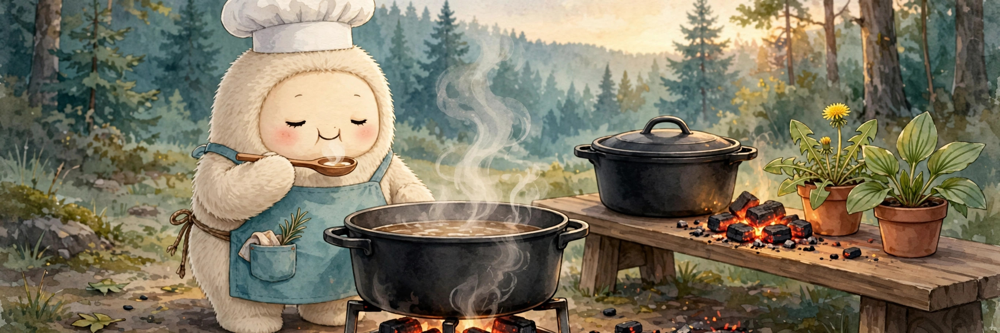

PLANTS → TASTE → THE CAMP KITCHEN
Everyday
Food.
Food is the workshop you already run three times a day — and it starts with an instrument you've been carrying since birth and a map of it that turns out to be wrong. This room audits the famous tongue map, shows why flavour is mostly smell wearing taste's name, explains the old negotiation between bitter and sweet, teaches how plant identification actually works (and where it fails), and ends where food gets made outdoors: over coals, by the count. It stands next door to The Survival Guide, and the two rooms borrow from each other constantly.
01 / THE TONGUE MAP, AUDITED
The map is not the tongue.
Somewhere in your schooling you met this diagram: sweet on the tip of the tongue, salty and sour along the sides, bitter alone at the back — the tongue divided into taste territories like countries on a map. It is in textbooks to this day. It is also, in that tidy form, wrong — and the way it went wrong is the lesson. In 1901 the researcher David Hänig measured taste thresholds at points around the tongue and found real but small differences: the tip is a bit more sensitive to sweet, the back a bit more to bitter. In 1942 Edwin Boring replotted Hänig's numbers as a graph whose dips and peaks made those small differences look like separate kingdoms, and the kingdoms got drawn, copied, and taught for eighty years.
Here is the audit, on a bench. Pick a taste and look at where the tongue actually senses it:
The hardware underneath
TASTE BUDS & PAPILLAE
The bumps on your tongue are papillae, and the taste buds — most of them, several thousand, each a cluster of receptor cells — sit in the walls of the little moats around them. Different papillae live in different neighbourhoods (the big dome-shaped ones in a row at the back, the mushroom-shaped ones scattered up front), which is the grain of truth the old map grew from. But every neighbourhood holds buds for all five tastes. The buds themselves are replaced roughly every week or two — which is why a burnt tongue heals its tasting in days, and why taste dulls a little with age as the replacement slows.
Five tastes, everywhere; the map drew walls where the tongue keeps only slopes.
Why this room opens with an audit
USEFUL MAP, NOT ACCURATE MAP
The tongue map wasn't a lie — it was a summary that outran its data, then got copied until the copying felt like proof. That is the most common way a wrong fact lives a long life, in a kitchen or anywhere else. This collection's standing rule applies: don't trust the diagram, audit it. The bench above is the audit — five buttons, and not one of them leaves any part of the tongue dark.
Breakage is the honest audit: here, the breakage is a button press.
Honest limit: the bench's sensitivity numbers are relative teaching values that summarise the modern measurements — mild leans, honestly drawn — not laboratory thresholds, and individual tongues vary well beyond them (the supertasters in section 03 are the extreme case). The claim that survives every audit is the structural one: all five tastes, all regions, no walls.
02 / FLAVOUR IS TASTE + SMELL
Your nose does most of the tasting.
The tongue's five tastes are only the bass line. What you call the flavour of a strawberry — everything that makes it a strawberry and not a sweet-sour red chew — arrives by smell, and by a back road: not through the nostrils, but up the back of the throat from inside the mouth, as you chew and swallow. That is retronasal smell, and it is why the same food has a flavour at all.
The pinch test
DO THIS AT HOME — IT'S THE WHOLE SECTION
Hold your nose firmly shut and put a jelly bean — or a bite of apple, or of raw onion — in your mouth. Chew. You will get the tastes: sweet, a little sour. The identity of the food will be missing, strangely hard to name. Now let go of your nose mid-chew. The flavour arrives all at once, like a radio finding its station — that rush is the retronasal road opening. Apple and onion, two foods nobody confuses with a working nose, become near-twins with it shut: both are mostly sweet water and crunch until smell testifies.
Taste says sweet, sour, a little bitter. Smell says apple.
Why a cold flattens dinner
THE CONGESTED CONTROL EXPERIMENT
A head cold doesn't damage your tongue at all — and yet food goes grey and dull. The cold has blocked the retronasal road with congestion: taste arrives, flavour can't. It's the pinch test run on you by a virus, and it's the best everyday proof that the two senses are separate systems with separate wiring. When the cold clears, the flavour returns in a rush, usually mid-meal.
If dinner tastes of nothing during a cold, your tongue is innocent. Check the nose.
The rest of the panel
TEXTURE, HEAT, AND THE TRIGEMINAL NERVE
Flavour has more witnesses: texture and temperature (crisp, creamy, cold), and the trigeminal nerve, which reports chilli heat, menthol cool, and the tingle of carbonation. None of those are tastes — capsaicin is a pain signal wearing a flavour's clothes — but the brain files them all in the same report, which is why a flat, warm cola tastes wrong even though its sugar and acid are unchanged.
Flavour = taste + smell + texture + temperature + tingle. The tongue supplies one line of five.
Honest limit: you will meet the claim that "80% (or 90%, or 75%) of flavour is smell." Treat it the way this room treats the tongue map: it's a slogan pointing at something real — smell's dominance — wearing a number nobody measured. The pinch test is the honest version: it doesn't quote a percentage, it demonstrates the fact.
The receiving equipment in full — ears, eyes, and the rest — lives in Everyday Body.
03 / BITTER + SWEET
An old negotiation.
Why do bitter and sweet taste good together — in chocolate, in coffee, in a sugared grapefruit? Because they are the two oldest signals on the panel, and a good dish is a treaty between them. Bitter is the poison alarm: most plant alkaloids — the chemistry plants defend themselves with — taste bitter, and the back of your tongue, the last checkpoint before swallowing, leans most sensitive to it. Sweet is the safe-energy signal: ripe, calorific, almost never poisonous. A food that trips the alarm and the all-clear at once gets your full attention — and cooks in every culture have learned to set the two against each other, with salt, acid, and fat as mediators.
Supertasters: the alarm at full volume
GENETICS ON A PAPER STRIP
Touch a paper strip dosed with PTC (or its cousin PROP) to your tongue and one of three things happens: nothing at all, a mild bitterness, or one of the most bitter experiences of your life. The difference is a gene (TAS2R38, in most cases), and the rough census is a quarter of people tasting nothing, half in the middle, and a quarter tasting it at full volume — the supertasters, who also tend to carry more taste buds per square centimetre. To them, grapefruit, coffee, and dark greens genuinely are more bitter — not pickiness, hardware. Children lean the same way, which is one honest reason the vegetable negotiations at the table are real.
Same grapefruit, different instruments. A lot of food arguments are calibration disputes.
The mediators
SALT, ACID, FAT
Salt suppresses bitter perception directly — a pinch makes both coffee and caramel taste sweeter without a grain of sugar added. Acid brightens: it gives sweetness contrast and keeps rich food from tasting sleepy (the lemon on the sweet tea). Fat slows everything down — it carries flavour compounds, coats the tongue, and stretches a bite's flavour over time, which is why milk rescues coffee and cocoa butter makes chocolate linger. Balancing a dish is usually not adding what's missing; it's sending in a mediator.
Open Everyday Chemistry → — the compounds themselves: alkaloids, acids, and what heat does to them.
Honest limit: the bench's profiles are a teaching summary on a 0–10 scale, not instrument readings — your grapefruit will argue with the numbers, and it should. The evolutionary story is the standard account, well supported in outline; the fine print (which bitter compounds, which receptors — humans carry about 25 bitter receptor types) is still being written by the people who study it.
04 / FOOD PLANTS
Identification is a discipline, not a guess.
Some of the commonest plants under your feet are food — and the skill that makes them food is not bravery, it's identification done properly: several marks, all agreeing, on the plant in your hand. This section teaches how that discipline works, plant by plant — the marks, the season, and the look-alike that punishes a shortcut.
Never eat a wild plant on a webpage's say-so — including this one.
A positive identification takes several independent marks, all agreeing, checked against a real field guide, ideally confirmed by someone local who knows the plant in the ground — and then clean ground, the landowner's permission, and a small first taste of a known-safe preparation. If any mark disagrees, the name is not earned and the plant is not food. These cards teach the checking. They are not a menu.
Dandelion
Young leaves, flowers, root · leaves best March–May, before the flowers
- Leaves in a flat ground rosette, deeply jagged — the "lion's teeth" the name (dent-de-lion) describes.
- One flower per stalk, and the stalk is hollow, smooth, and leafless.
- Broken leaf or stalk weeps white milky sap.
- A single stout taproot — never a bulb, never a rhizome mat.
The look-alike: cat's ear and the other false dandelions — hairy leaves and solid, branching stems give them away. The mix-up costs a bitter mouthful, not a hospital trip; but a rosette you can't name before it flowers is a rosette you leave alone.
Safety: Lawn dandelions are only as clean as the lawn. Herbicides and weed-and-feed make the commonest plant the riskiest plate.
Honestly: The hollow stalk plus milky sap plus jagged rosette is the test — all three, on the plant in your hand. Any single one alone matches other plants.
Broadleaf plantain
Young leaves, seeds · April–October, young leaves best
- Wide oval leaves, all from one ground rosette, hugging the soil.
- Five to seven strong ribs run tip-to-base, parallel — no branching vein net.
- A torn leaf's ribs pull out in elastic strings.
- A leafless spike rises from the centre, packed with tiny seeds.
The look-alike: young lily-of-the-valley leaves, which unroll from a stem base, carry fine branching veins instead of bold parallel ribs, and spread by rhizomes. It is genuinely poisonous — this is the confusion that makes the ribs worth checking, every time.
Safety: Plantain loves paths, driveways, and field edges — runoff, dog traffic, and spray drift. Pick high, pick away from the road.
Honestly: This is the same plantain The Survival Guide's remedies shelf grades as a folk remedy — read its evidence line there before believing either use.
Red & white clover
Flower heads, young leaves · May–September
- Leaflets in threes, each on its own little stalk.
- Red clover: a round pink-red flower head on a short stalk; leaflets often carry a pale chevron.
- White clover: a white-to-pale-pink ball of small florets; stems creep and root at the joints.
- The head is a cluster of many tiny tube florets — never one single flower.
The look-alike: wood sorrel — the friendly mix-up. Its leaflets are hearts, not ovals, and fold down along a crease. A different plant with a different taste; the lesson is that "three leaflets" alone names nothing.
Safety: Treated lawns are out, full stop. Fresh, clean, correctly named flower heads from ground you know are the whole of this lesson.
Honestly: Clover flower tea and salad sprinkles are mild pleasures, not nutrition strategy — the honest serving is a garnish, and the honest skill is the naming.
Blackberry
Fruit · July–September, fully black and soft
- Arching, thorny canes that root where their tips touch the ground.
- Leaves of three to five toothed leaflets, pale and slightly hairy beneath.
- White-to-pink, five-petalled flowers before the fruit.
- The fruit is a cluster of small drupelets — and the green core comes away inside the picked berry.
The look-alike: raspberry — the classic tell. A raspberry slips off its core and leaves it standing like a thimble; a blackberry keeps the core. One small structural mark, checked, separates them with certainty.
Safety: The hazard at a bramble patch is usually the company, not the berry: poison ivy's "leaves of three" climbs through blackberry canes. Gloves, sleeves, eyes on the canes.
Honestly: You'll hear that no poisonous blackberry look-alike exists in North America. It's broadly true — and the standing rule still applies, because the day it matters, "broadly" is doing heavy lifting.
Wood sorrel
Leaves and flowers, in small amounts · spring through fall
- Three leaflets, each a clean heart shape, meeting at a point.
- The leaflets fold downward along their crease at night and in harsh sun.
- Small five-petalled flowers — yellow in the common yard species, pink in some woodland ones.
- No clover-style flower ball, no rooting creeping stems; a delicate, low plant.
The look-alike: clover — round or oval leaflets that never fold, and ball-shaped flower heads. Hearts-plus-fold is the mark pair; one without the other is not enough.
Safety: The lemon tang is oxalic acid. Garnish amounts — a few leaves — not bowls; people with kidney trouble or gout should skip it entirely.
Honestly: Sorrel is this section's built-in lesson that "edible" is a dose, not a verdict. Many good foods carry a compound that argues with quantity.
Cattail
Young shoots (spring) · pollen (early summer) · rhizomes (fall–spring)
- The brown, hot-dog-on-a-stick flower spike — in season, a yellow pollen spike stands directly above it.
- Long, flat, strap leaves, taller than you are, from the base.
- Standing in shallow water or marsh edges, in colonies.
- The brown spike persists through winter, fraying into fluff.
The look-alike: blue flag iris, as young shoots — poisonous, and genuinely confusable before any spike exists. The rule that saves you: no brown spike, no cattail harvest. The spike is the signature; without it the name isn't earned.
Safety: Cattails are water filters that keep what they catch — heavy metals and runoff included. Only from water you'd trust; roadside ditches are out entirely.
Honestly: "The supermarket of the swamp" is the old boast, and the parts are real — but each part has its own narrow season, and the shoot season is exactly when the iris confusion is live. The calendar is part of the ID.
The ground these plants grow in — soil, seasons, and what the land is doing — is Everyday Earth's room. The fire you'll cook over, and the discipline this section borrows, live next door in The Survival Guide.
05 / THE CAMP KITCHEN
Dinner, by the count of coals.
Camp cooking is heat management with supper at stake. The scout tradition's great instrument is the Dutch oven — a lidded cast-iron pot that becomes an oven when you count charcoal briquettes onto it: some underneath, more on the lid, and the count is the thermostat.
The coal bench
The 12-inch chart, printed
| Temperature | On top | Underneath | Total |
|---|---|---|---|
| 300 °F | 14 | 8 | 22 |
| 325 °F | 15 | 9 | 24 |
| 350 °F | 16 | 10 | 26 |
| 375 °F | 17 | 11 | 28 |
The chart as published from J. Wayne Fears' Dutch-oven work and carried by generations of scout cookbooks. Rotate the oven a quarter turn and the lid the other way every fifteen minutes or so — coals have hot spots, and turning is how the oven averages them.
Honest limit: published charts disagree by a few coals — Lodge's own chart splits the same heat with more on top (16/7 for a 12-inch at 325 °F against this chart's 15/9) — and wind, cold, and tired coals move the real temperature more than the disagreement does. The count is a starting point. The food is the thermometer that matters; check it.
Foil packets
THE HOBO DINNER, ENGINEERED
Heavy foil, doubled; the food in the middle with the dense items (potato, carrot) sliced thinnest, because the packet cooks everything for the same time whether it's ready or not. Seal with a drugstore fold — fold the edges over twice, flat — so steam stays in and the packet becomes its own little pressure cooker. Twenty to thirty minutes in the coals, turned once. The packet is also the plate.
Safety: Steam bursts when a packet opens — open the far edge first, away from faces and hands, every time.
Honestly: The packet forgives almost everything except thickness. Raw-in-the-middle potatoes beside burnt onions is not bad luck; it's geometry — slice for the slowest item.
Stick cooking
THE OLDEST METHOD ON THE PAGE
A green stick (it must be green, or it becomes part of the fire), whittled to a point: biscuit dough twisted in a snake around it, a sausage, an apple to bake in the coals after. Cook over coals, not flames — flame soots and scorches while the inside stays raw; coals cook by steady radiation. Turn slowly and constantly, like the food is on a spit, because it is.
Safety: Know your stick's tree. Yew and oleander are poisonous, and treated or painted wood is never firewood — green hardwood from a tree you can name is the rule.
Honestly: The dough snake will fall into the fire sometimes. That's not failure; that's the tuition every generation pays. Cook two.
One-pot cooking
STEW LOGIC
One pot, everything in it, in the order of how long each thing needs: hard vegetables and dried beans first (beans soaked beforehand — see the honesty line), meat to brown before the liquid goes in, grains midway, greens at the end so they stay green. The pot forgives timing errors that a grill punishes, washes up as one item, and scales from two people to a patrol by multiplication.
Safety: A stew that will sit must stay hot or get cold fast — the lukewarm middle hours are where bacteria throw their party. In camp: cook it, eat it, and let leftovers go.
Honestly: Dried beans are the one-pot trap: kidney beans especially must be boiled hard for a full ten minutes somewhere in their cooking — a gentle all-day simmer alone doesn't destroy their lectin. Brown, boil, then simmer.
The cookbook shelf
A CENTURY OF CAMP KITCHENS
The founding text is Horace Kephart's Camp Cookery (1910) — provisions, fires, breads, and game from America's great camping librarian, public domain and free to read in full. Around it stands a century of scout and camp cookbooks, district collections, and patrol favourites, most built on the same foundations this section uses: the coal chart, the foil packet, the one pot. The reading links are on the shelf in Links out.
Kephart first. Every camp cookbook since is in conversation with him.
The oven hangs and the fire gets built next door: the fire lays are in The Survival Guide's fire section, and the tripod it hangs from is lashings — section 05, Knots, where the square lashing lives. Water for the pot follows the Guide's rule: filter, then boil.
06 / WHY COOKING WORKS
Browning is chemistry you can eat.
The Maillard reaction
WHERE THE FLAVOUR OF COOKED FOOD COMES FROM
Above roughly 285 °F (140 °C), amino acids and sugars in food start reacting in a cascade — the Maillard reaction — producing hundreds of new flavour compounds and the brown colour that comes with them. It is the crust on bread, the sear on meat, the deep colour of toast and roasted coffee. It needs a dry surface: boiling water caps at 212 °F (100 °C), which is why boiled food never browns and why you pat meat dry before it meets the pan.
Brown is not burnt and not caramel — it's a third thing, and it's most of dinner.
Caramelisation
SUGAR, ALONE WITH HEAT
Sugar needs no partner: heated past roughly 320 °F (160 °C), sucrose itself breaks down and recombines into the amber, nutty, increasingly bitter compounds of caramel. The colour is a gauge — pale gold is gentle, deep amber is assertive, and past that the bitter takes over entirely, which ties this card straight back to section 03: a caramel cook is steering the bitter-sweet negotiation with a thermometer's worth of seconds.
Same sugar, different depths. The colour tells you where on the treaty you are.
Why onions sweeten slowly
PATIENCE, ITEMISED
A raw onion's bite is sulfur chemistry — the same defence system that makes you cry. Long, slow cooking dismantles those compounds while the onion's own sugars concentrate as water leaves; some light Maillard browning joins in late. The transformation takes thirty to forty-five minutes of occasional stirring, and there is no honest shortcut: the famous ten-minute "caramelised onions" of quick recipes are sautéed onions in a costume.
If a recipe promises it in ten minutes, the recipe is the thing that's raw.
Honest limit: the temperatures are onsets, not switches — Maillard chemistry creeps along below 285 °F too (slow roasts prove it), just too slowly to notice at dinner speed. And the compounds number in the hundreds; this room names the reaction, not the catalogue. The catalogue is Everyday Chemistry's home ground.
07 / LINKS OUT
The shelf.
Every destination below was checked live on 20 November 2026. The shelf leaves this page; the benches above never do.
The cookbook shelf
- Horace Kephart · Camp Cookery (1910) ↗
The founding camp cookbook, complete and free at the Internet Archive — provisions, fires, breads, game. Project Gutenberg also carries Kephart; the Archive's copy is the one that answered today's check.
- Chuckwagon Supply · Dutch-oven FAQs ↗
The coal bench's chart in its published home, with the diameter ± 3 rule of thumb and the rest of the Dutch-oven craft around it.
Knowing plants
- Eat The Weeds · Green Deane ↗
The internet's most careful foraging teacher: plant-by-plant identification with the look-alikes named and the same discipline this room teaches — several marks, or no meal.
Taste, read deeper — Wikipedia
- Tongue map ↗
The myth's own biography: Hänig's measurements, Boring's graph, and how a distortion became a diagram in every classroom.
- Taste ↗
The gustatory system in full: the five tastes, the receptor cells, the papillae, and the wiring to the brain.
- Retronasal smell ↗
The back road from mouth to nose that carries flavour — the pinch test's anatomy, written out.
- Supertaster ↗
PTC and PROP, the TAS2R38 gene, and the population split — why the same grapefruit is a different fruit to different people.
Cooking chemistry — Wikipedia
- Maillard reaction ↗
The browning cascade in full: the chemistry, the compounds, and why it runs the flavour of cooked food.
- Caramelization ↗
Sugar alone with heat: the temperatures by sugar type, and the flavour compounds at each depth of colour.
08 / KEEP GOING
Sister rooms.
The Survival Guide
The neighbour, and this room's other half outdoors: the fire this kitchen cooks over, the water rule the pot obeys, the knots the tripod hangs from — and the remedies shelf that grades plant claims the way this room's plant section tries to deserve.
Everyday Body
The tasting equipment's home room: how the body's systems are built and connected — the anatomy this room's tongue and nose belong to.
Everyday Chemistry
The compounds behind the cards: the alkaloids the bitter alarm evolved for, the acids on the balance bench, and the kitchen shelf where this chemistry is done in cups and cabbage juice.
Everyday Earth
Where the plants grow: soil in layers, the seasons that set the foraging calendar, and the ground every camp kitchen stands on.
09 / HELP
Help — how Everyday Food works.
The manual for this workshop — what each part does, the simplifications it makes, and where its information comes from. This page and the full README work offline; the GitHub links need the internet.
The tongue, audited
The bench shades a tongue diagram from the sensitivity table in food.js: relative values (0–1) for the five tastes in four regions, summarising the modern measurements — every taste sensed everywhere, with mild regional leans (sweet leaning tipward, bitter leaning back). The section tells the map's biography — Hänig's 1901 threshold measurements, Boring's 1942 graph, eighty years of copying — because the audit is the exhibit: the collection's "useful map, not accurate map" theme in one diagram. The numbers are teaching values, not laboratory thresholds, and the section says so.
Flavour & smell
Three cards: the pinch test (a home experiment demonstrating retronasal smell — hold the nose, lose the identity, release mid-chew and flavour arrives), the head cold as the same experiment run by a virus, and the rest of the flavour panel (texture, temperature, trigeminal tingle). The section carries the room's slogan audit: the "80% of flavour is smell" figure is a pointer wearing a number nobody measured; the test is the honest version. Everyday Body is linked for the fuller anatomy.
Bitter + sweet
The balance bench reads five dishes on five axes (bitter, sweet, salt, acid, fat; 0–10 teaching values in food.js), each with its why and its lever — the adjustment a cook actually makes. The framing is the evolutionary one: bitter as the alkaloid poison alarm, sweet as the safe-energy signal, salt/acid/fat as mediators (salt measurably suppresses bitter perception). The supertaster card covers PTC/PROP paper tests, the TAS2R38 gene, and the rough quarter/half/quarter population split.
Food plants & the rule
Six plants — dandelion, broadleaf plantain, red & white clover, blackberry, wood sorrel, cattail — each taught as numbered identification marks that must ALL agree, a season, a named look-alike with the distinguishing mark, a safety line, and an honesty line. The section opens with the standing rule in the big callout: never eat a wild plant on a webpage's say-so, this one included; a positive ID takes several marks, a field guide, and local knowledge. The plant data (marks, seasons) is kept in food.js where the tests can check its consistency; the seasons are temperate North America's.
The camp kitchen
The coal bench reads the published briquette chart (in food.js) for five oven sizes and four temperatures, and states the chart's rule — diameter + 3 on top, − 3 underneath at 325 °F, one more coal each side per 25 °F — so the table can be rebuilt from memory. The 12-inch chart is also printed on the page. Method cards cover foil packets, stick cooking, and one-pot cooking, each with its safety and honesty lines, and the cookbook card introduces Kephart's Camp Cookery (1910). Fire, knots, and water link next door to The Survival Guide, which links back.
Why cooking works
Three cards: the Maillard reaction (onset ≈285 °F / 140 °C, needs a dry surface — boiling's 212 °F ceiling is why boiled food never browns), caramelisation (sugar alone, ≈320 °F / 160 °C for sucrose, bitterness growing with depth — the link back to the balance bench), and slow onions (sulfur defences dismantled, sugars concentrated, thirty to forty-five honest minutes). Everyday Chemistry is linked as the compounds' home room.
Honest limits
Every bench carries its limits on its face: the tongue numbers are teaching values; the flavour percentage is a slogan, audited rather than repeated; the dish profiles are summaries your own grapefruit may out-argue; the plant section teaches identification and refuses to be a menu; published coal charts disagree by a few coals and weather disagrees more; the cooking temperatures are onsets, not switches. Where this room simplifies, it says what it simplified.
Works offline?
Yes. The benches, the plant cards, and this Help all run from the files in this folder, including inside the desktop app. Only the Links Out shelf needs the internet, because those pages live on other people's sites — Kephart's book included.